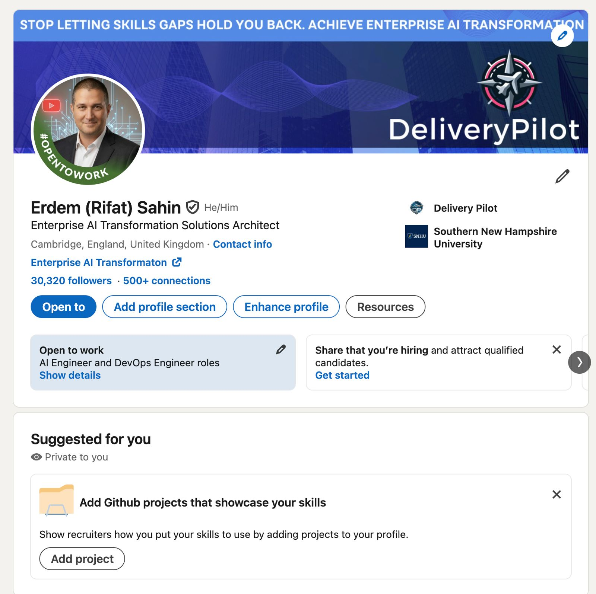
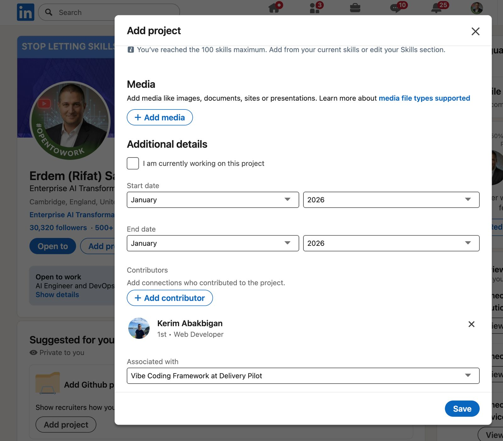
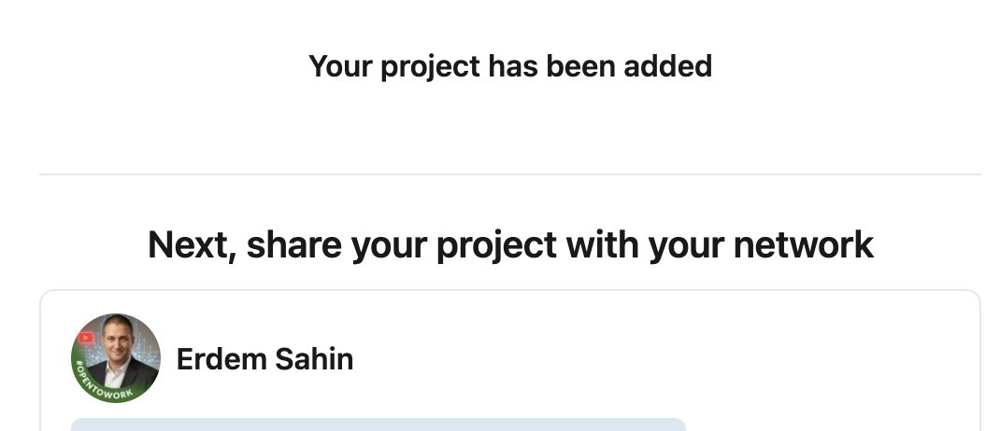
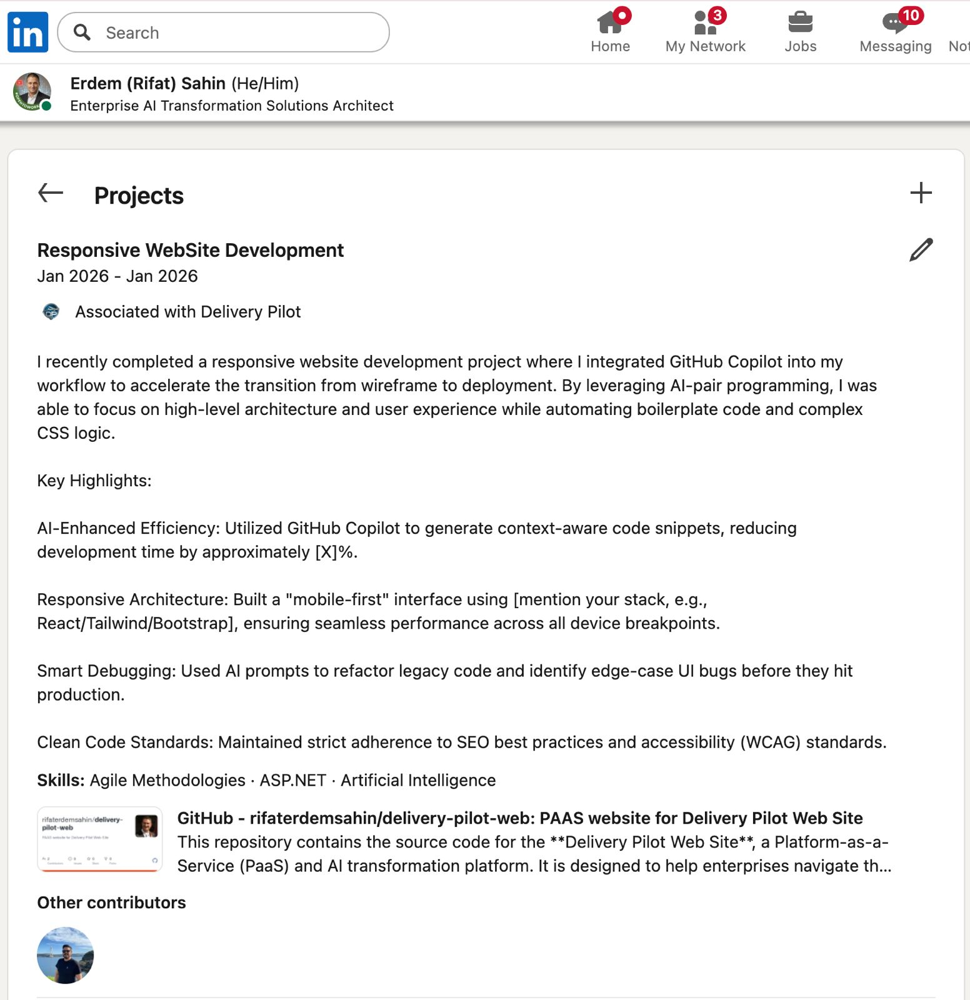

Sertifikasyon Yolculuğu
Sürecimiz, yapay zeka dönüşümlerine liderlik etmek için hem teorik bilgiye hem de pratik deneyime sahip olmanızı sağlar.
1. Değerlendirmeler
Yapay zeka dönüşüm modelleri ve Delivery Pilot metodolojisi hakkındaki temel bilginizi doğrulamak için kapsamlı değerlendirmelerimizi tamamlayarak başlayın.
2. Simülasyonlar
Gerçek dünya kurumsal zorluklarını taklit eden etkileşimli simülasyonlara katılın. Kök neden analizi ve dokümantasyon verimliliği için yapay zeka temsilcilerini kullanmayı öğrenin.
3. Sertifikasyon
Canlı Projeler teslim ederek sertifika kazanın. Üretime hazır yapay zeka dönüşüm projelerinde GitHub katılımcısı olun, Rifat Erdem Şahin gibi en iyi git katılımcıları tarafından sertifikalandırılın.
Delivery Pilot Kimdir? Niki Lauda Standardı
Klinik hassasiyetin, sıfır-toleranslı telemetrinin ve doğrulanmış proje katkılarının sertifikalı pilotları rastgele istem denemecilerinden nasıl ayırdığını öğrenin.
Projenizi LinkedIn'e Nasıl Eklersiniz?
Doğrulanmış Delivery Pilot projenizi LinkedIn profilinizde sergilemek için bu adımları izleyin.
Adım 1: Proje Ekle
LinkedIn profilinize gidin ve "Sizin için önerilenler" bölümünü veya "Projeler" bölümünü bulun. Gerçek dünya çalışmalarıyla yeteneklerinizi sergilemeye başlamak için "Proje ekle"ye tıklayın.

Adım 2: Projeyi Tanımlayın
GitHub teslimat projenizin başlığını girin. Tamamladığınız yapay zeka dönüşümünü yansıtan net ve açıklayıcı bir isim kullanın (örneğin, "Kurumsal Yapay Zeka Dokümantasyon Temsilcisi Uygulaması").

Adım 3: İlişkilendirme ve Detaylar
Projeyi mevcut rolünüzle veya "Delivery Pilot" ile ilişkilendirin. GitHub depo URL'sini ve bir teslimat profesyoneli olarak katkılarınızın ayrıntılı bir açıklamasını ekleyin.

Adım 4: Yayınla
Proje detaylarınızı gözden geçirin ve "Kaydet"e tıklayın. Projeniz artık profilinizde görünecek ve tamamlanmış yapay zeka dönüşümlerini teslim etme yeteneğinizi belgeleyecektir.
